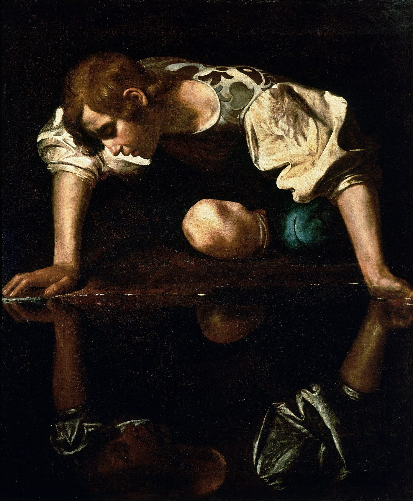

ego
エゴ
「エゴと闘うのに疲れました。この戦争にどうやって勝てばいいのですか」。エゴとは何だと言われているのか、なぜ「敵と見ること」が罠だと言われるのか、代わりに何をすればよいと言われているのか。「エゴ」という言葉がフロイトから来た経緯、仏教の「我執」と「煩悩即菩提」、そして心の「部分」を敵にしない心理療法の側の言葉。

「エゴと闘うのに疲れました。この戦争に、どうやって勝てばいいのですか」。その動画に寄せられた、ある視聴者の質問です。瞑想をしても、本を読んでも、頭のなかの声は止まらない。自分を責める声、比べる声、欲しがる声。それを「エゴ」と呼びます。そして多くの人が、そのエゴを、倒すべき相手だと思っています。
このページでは、エゴとは何だと言われているか、なぜ「敵と見ること」そのものが罠だと言われるのか、代わりに何をすればよいと言われているかを見ます。そのあとで、「エゴ」という言葉がどこから来たのか、日本語にはもとからどんな言葉があるのか、心の一部を敵にしない心理療法が何を言っているかを、隣に置きます。
エゴとは何だと言われているのか
エゴとは、自分が誰かについての、頭のなかの組み立てだとされます。私は弁護士だ、私は女性だ、私は結婚している——そう「私は」のあとに何かの言葉を足すたびに、自分を定義している。それがエゴの声だ、という説明です。エゴは、自分と外の世界とのあいだに境界を作り、分かれているという感覚を作るとされます。
ドイツ生まれの著述家エックハルト・トール（『さとりをひらくと人生はシンプルで楽になる』の著者）は、それがどう始まるかを、子どもの姿で説明しています。
ほとんどの人は、自分が誰かという感覚を、頭のなかの思考の動きから引き出しているとされます。育つにつれて、思考は何かと自分を同一化していく。最初の持ち物、おもちゃ。親から与えられた名前。これがあなたよ、と親が言う。名前が、その後のすべての同一化の受け皿になる、という説明です。おもちゃを取り上げられた子どもが泣き叫ぶのは、もう同一化が起きているからだとされます。5分後にはそのおもちゃに興味をなくすかもしれない。それでも、取り上げられたときはひどく痛い、という例が挙げられます。
それから、肩書き、人間関係、知識、体力、意見と続きます。意見は思考の形ですが、そこに「私」が染み込む。誰かがその意見に疑問を投げると、身構える、腹が立つ、怖くなる。エゴとはつねに何かとの同一化であり、それが自分だという感覚をくれるものだとされます。人はそれを命がけで守る、という説明です。
トールは、この始まりを描いた古い物語として、ギリシャ神話のナルキッソスを挙げています。森を歩いていた若者が、静かな池をのぞき込み、そこに映った自分の姿に見とれて、離れられなくなる。「自分の映像に恋をした、というより、自分の映像と自分を同一化した。これは、内側で起きていることの絵です。自分が誰かという感覚をくれる、映像の形成。それがエゴです」。彼は続けます。「いまは池がなくても、鏡があり、スマートフォンがある。映像を世界に送り出して、『いいね』という反応を待つ」。
「敵と見ること」が罠だと言われている
冒頭の質問「この戦争にどう勝てばいいのか」に対して、返される答えは、意外なものです。戦争だと思っていることが、いちばんの罠だ、というのです。
「質問のなかに、すでに問題が見えます。『闘う』『戦争に勝つ』。内側の作業をするときに落ちる、いちばんの罠が、エゴを敵と見ることです」
「EGO を Edging God Out（神を締め出すもの）の頭文字だと言う教え方があります。尊敬する教師たちがそう言うのを何度も聞きました。でも、それは違う。神を締め出すものなど、ない」
エゴは敵だと教えられることが多い、と指摘されます。たしかに、分かれているという感覚は苦しみの根にある。それでも、人間として生きるには、洞窟の修行者でもないかぎり、自分と環境を区別する働きが要る。足が痛いから医者に行こう、と言えるためにも必要だ、という説明です。エゴを敵と見ると、自分に対して暴力的な態度をとることになる。エゴがエゴを憎むのは自分への攻撃であり、しかも憎み恐れるものは養われるので、皮肉なことにエゴは大きくなる、とされます。
「超えようとする前に、健全で釣り合いのとれたエゴが要ります。だから、内側の作業や癒しにこれほど時間をかける。それをせずに深い体験だけ得ると、ほかの面が育っていない、偏った人になる。醜聞を起こす教師たちは、たいていそういう形です」
トールも、エゴを「なくすべき欠陥」とは見ていません。「エゴは、通らなければならない段階です。エゴ以前の段階では、人は自然や部族と一体のなかに生きていた。でも、一体であることを知らなかった。何かを深く知るには、いちど、それを失わなければならない」。彼は新約聖書の放蕩息子のたとえを引きます。父の家を出て、財産を使い果たし、帰ってくる。帰ってきた家は、出たときと同じ家ではない。失って、取り戻す。取り戻したときには、前より深い。人はみな放蕩息子なのだ、という読み方が示されます。
トールはもうひとつ、その人がとくに落ちやすい形を挙げています。「精神的なエゴというものがあります。自分は他の人より精神的だ、という自己像。さらに、自分はエゴのない人間だ、という自己像もある。たいてい隠れていて、口には出さない。ただ、まだエゴのある人たちを、見下ろしている」。
何をすればよいと言われているのか
「エゴに舞台を仕切らせろ、という話ではありません。もっと健全で思いやりのあるやり方は、ただエゴに気づくこと。エゴが、頭のなかの物語や、古い傷や、条件づけの型を通して、自分にどんな鎖をかけているかに気づく。そして、その鎖から自分を解く。鍵は自己認識です。自己非難でも、自分との戦争でもない」
頭が高速で回りはじめ、自分を壊す考えが出てきたときの手当てとして、手を胸に当て、目を閉じて、なだめる言葉を言う方法が挙げられます。大丈夫、安全である、危ないことは何も起きていない、いま起きていることはすべて自分のためになる——そうした言葉です。エゴをなだめて安心させるほど、エゴは信頼するようになり、静かになる、と説明されます。エゴが物事を握って離さないのは、人生のどこかでその人を守ろうとしたからで、いまは、その握り方を手放す方法が分からないだけだ、とされます。
自分の一部と闘っているとき、自分を押しのけているとき、人は自分をばらばらにしているとされます。ばらばらの状態から癒えることは決してない。癒しとはその反対で、すべての自分を抱えて、ひとつにすることだ、という説明です。エゴを抱えはじめると自分がまとまってくる。まとまるほど、源とつながっていると感じる、と述べられています。
この作業をすればエゴは消えるのか、という問いもよく寄せられます。答えは、消えないというものです。いまもエゴはある。自分は誰かという強い感覚がある。ときどき大きな声になって、釣り合いを戻さなければならない。それでいい。エゴを迂回しなければ源に届かない、という教えは多いけれど、神への道はひとつではない。エゴを通って、エゴとともに、届くこともできる」
こう考えるようになった理由を、自分の体験として話しています。南米の植物を使う儀式のなかで、忘れていた4歳のころの記憶が戻り、家族からの性的な虐待に、幼い自分が耐えられなくなったその瞬間に、自分のエゴが生まれるのを見た、というのです。「エゴは、自分を守る仕組みとして自分を作りはじめた。家族のなかで安全ではなかったから。ずっと敵だと思っていたものが、あの瞬間には、救いだった。その守りは、あとで幻想だったと分かる。それでも、4歳の子どもにとって、あの幻想は、どれほどの恵みだったか」。それ以来、頭が暴走するたびに、上の「なだめる言葉」を自分にかけるようになった、と話しています。
「エゴ」という言葉は、どこから来たのか
「エゴ」は、もとはラテン語で「私」を意味する言葉ですが、いまの使われ方には、はっきりした出どころがあります。
精神分析を作ったジークムント・フロイトは、心の仕組みを、ドイツ語で das Ich（私）、das Es（それ）、Über-Ich（超・私）の三つで説明しました。1953年、ジェイムズ・ストレイチーが著作集を英訳したとき、これがラテン語の ego、id、super-ego に置き換えられ、この言葉が広まりました。日本語ではそれぞれ「自我」「エス」「超自我」と訳されています。
フロイトの自我は、敵ではなく、調整役です。エス（欲動）からの要求と超自我（規範）からの要求を受け取り、外の世界の刺激を調整する。「自我は、外界・超自我・エスという三人の厳しい主人に仕える」。フロイトはこれを、馬に乗る人にたとえました。乗り手は、自分より強い馬の力を抑えて、方向を決めなければならない。「自我はそれ自体、意識されない」という有名な言葉もあり、自我の働きの大部分は、本人に気づかれないまま進むとされています。
その「エゴ」は、フロイトの言葉を借りつつ、意味をずらしています。フロイトの自我が「心の調整機能」であるのに対し、そのエゴは「自分が誰かという頭のなかの映像」。トールの言い方では「思考でできた、自分についてのフィクション」。同じ言葉が、違うものを指しています。
日本語の日常では、「エゴ」はまた別の意味で使われます。「あの人はエゴが強い」「エゴイズム」と言うときの「エゴ」は、自分本位、わがままのこと。その動画を見て「エゴを手放す」と聞いたとき、「わがままをやめる」と受け取る人が多いのは、この日常の意味が先にあるからです。言う「エゴ」は、わがままに限らず、「私は〜だ」という定義そのものを指しています。
日本語では
「私は誰か」という問いには、日本には、仏教を通してもとからある言葉があります。
仏教で「我（が）」とは、永遠に変わらず、独立して存在し、すべてを所有し支配する、と考えられる実在のことです。釈迦は、そのような我は、どこにも見つからないと説きました。これが「無我」です。心身を作る五つの要素（五蘊）の集まりを、便宜上「自分」と呼んでいるだけで、それは絶えず変わる。だから「われ」「わがもの」と考えて固執してはならない。この固執が「我執」です。
ただし、経典によれば、遊行者ヴァッチャゴッタが「我はあるのか、ないのか」と問うたとき、釈迦はどちらにも答えず、沈黙したとされています。あると答えれば永遠論に、ないと答えれば断滅論に与することになるから、というのがその理由です。「自我がない」「主体がない」と言い切ったのではなく、「我」「私のもの」という観念への固執が説かれた、と考えられています。
「エゴは敵ではない」「エゴは恵みでもある」と言われることに、いちばん近い日本語は、天台の本覚思想が唱えた「煩悩即菩提」かもしれません。煩悩（心を乱し、悩ませる働き）は、断ち切るべき敵ではなく、そのまま悟りの種である、という考え方です。「エゴを通って源に届く」という上の言葉と、形が似ています。
心理学の側では
「エゴは自分を守るために生まれた」「敵にせず、なだめて、ひとつにする」という言い方は、心理療法の側にも、よく似た形で存在します。
アメリカの家族療法家リチャード・シュワルツが作った心理療法で、心はひとつではなく、それぞれの視点と役割を持つ複数の「部分（パーツ）」でできている、と考えます。部分のなかには、傷を負った部分と、それを守る部分があり、守る部分は、かつて本人を安全にしようとしてその役を引き受けた、とされます。療法の目標は、部分と闘うことではなく、傷を受けていない「セルフ」（思いやりと明晰さの状態）から、部分と対話し、荷を下ろさせて、統合することです。
2015年、アメリカの根拠に基づく実践の登録（NREPP）に載りました。2025年の展望論文は、PTSD、抑うつ、慢性疼痛に対して「有望な治療法」と評価しています。複雑性PTSD、不安、抑うつの治療で広く使われています。
「エゴが4歳のとき、守るために生まれた」という上の体験談は、IFSの言葉では「守り手の部分は、幼いころに役を引き受けた」となります。「なだめる」「ひとつにする」は、「セルフから部分に語りかけ、統合する」に対応します。言葉は違いますが、指している作業は、かなり近いものです。
ただし、IFSには注意点も報告されています。2025年のニューヨーク・マガジンの調査報道は、複雑なトラウマを持つ人に対して、守る部分を急いで飛び越えると、かえって不安定になることがあると指摘しました（IFS研究所は、それは標準の訓練から外れた誤用だと反論しています）。「エゴを守り手として扱う」という考え方そのものが、守り手を性急に外すことの危険を含んでいる、ということです。
近いことを言っているもの
- 自分が誰か、分からなくなった — 「エゴの死」と、その時期に起きること。別のページで扱っています
- 頭のなかが静まらない — 思考の声と距離をとる練習。別のページで扱っています
- インナーチャイルド — 子どものころの自分に語りかける、という形。別のページで扱っています
- 心を開く — 「自分への愛を先に」という練習と、自分への思いやりの研究。別のページで扱っています
- 影（シャドウ） — 認めたくない自分の一部を、敵にしないという考え方。別のページで扱っています
体験談に出てくる南米の植物の飲み物（アヤワスカ）は、成分のDMTが日本では麻薬及び向精神薬取締法の規制対象です。国内で手に入れたり使ったりすることは、犯罪になります。また、「自分を壊す考え」が、なだめる言葉で静まらず、死にたい気持ちにつながっているなら、よりそいホットライン（0120-279-338、24時間）か、いのちの電話（0570-783-556、10〜22時）に、声で話してください。
出典・参考
- Christina Lopes, The Ego Is NOT Your Enemy. Here's Why.（YouTube）エゴの定義、「敵と見る罠」、幼い日の記憶、なだめる言葉、統合。引用は自動生成の字幕による
- Eckhart Tolle, The Many Faces of Ego（YouTube）名前と玩具から始まる同一化、比較、ナルキッソス、精神的なエゴ。引用は自動生成の字幕による
- Eckhart Tolle, What is the Purpose of The Ego in the Awakening Process（YouTube）エゴは通らねばならない段階、放蕩息子のたとえ。引用は自動生成の字幕による
- LonerWolf, Why Your Ego is Not the Enemy（YouTube）エゴを憎むのは自分への攻撃、超える前に健全なエゴが要る。引用は自動生成の字幕による
- 自我（ウィキペディア）フロイトの das Ich と1953年の英訳、調整役としての自我
- Id, ego and superego（英語版ウィキペディア）馬に乗る人のたとえ
- 無我（ウィキペディア）我執、「我はあるか」への釈迦の沈黙
- 煩悩（ウィキペディア）天台本覚思想の「煩悩即菩提」
- Internal Family Systems Model（英語版ウィキペディア）心の「部分」と「守り手」、2015年の登録、2025年の批判
- アヤワスカ（ウィキペディア）成分のDMTは日本では麻薬及び向精神薬取締法の規制対象
関連することば
 astral projection / out-of-body experienceアストラルトラベル眠り際に体が動かず、天井近くから自分を見た気がした。幽体離脱とは何かを、この分野の実践者の言葉、神経科学者・心理学者による体外離脱の説明、研究者ディーン・シールズの文化研究を引きながら整理します。戻れない不安、眠りや金縛りとの関係、5段階の方法と注意点、生霊・あくがるも解説します。
astral projection / out-of-body experienceアストラルトラベル眠り際に体が動かず、天井近くから自分を見た気がした。幽体離脱とは何かを、この分野の実践者の言葉、神経科学者・心理学者による体外離脱の説明、研究者ディーン・シールズの文化研究を引きながら整理します。戻れない不安、眠りや金縛りとの関係、5段階の方法と注意点、生霊・あくがるも解説します。 ascension / 5Dアセンション疲れが抜けず、動悸や人間関係の変化が気になる。アセンション症状とは何かを、解説動画の語り手が挙げる六つ・31の変化、並木良和や考古天文学者アンソニー・アヴェニの言葉、精神医学の見方とともにたどり、5次元や地球変容の語りの来歴、受診が必要な症状との線引きを整理します。
ascension / 5Dアセンション疲れが抜けず、動悸や人間関係の変化が気になる。アセンション症状とは何かを、解説動画の語り手が挙げる六つ・31の変化、並木良和や考古天文学者アンソニー・アヴェニの言葉、精神医学の見方とともにたどり、5次元や地球変容の語りの来歴、受診が必要な症状との線引きを整理します。 ascendant / rising signアセンダント自分の星座より、周囲から受け取られる印象のほうがしっくりくる。アセンダント（上昇宮）とは、生まれた瞬間に東の地平線にあった星座で、第一印象や世界との接点としてどう捉えられるのかを解説します。CHANIとウィキペディアの説明を引き、太陽・月との違い、出生時刻と出生地が必要な理由、ビッグスリーでの位置づけを紹介します。
ascendant / rising signアセンダント自分の星座より、周囲から受け取られる印象のほうがしっくりくる。アセンダント（上昇宮）とは、生まれた瞬間に東の地平線にあった星座で、第一印象や世界との接点としてどう捉えられるのかを解説します。CHANIとウィキペディアの説明を引き、太陽・月との違い、出生時刻と出生地が必要な理由、ビッグスリーでの位置づけを紹介します。 affirmationsアファメーション「私は豊かだ」「私は愛されている」と毎朝唱えている。でも、唱えるたびに、嘘をついている気がする。効いているのか、逆効果なのか。この分野で「これを先に身につけないと効かない」と言われている一つのこつと、38の言葉。この言葉の来歴（1910年、1984年）、日本語の「言霊」、そして心理学が2009年に見つけた「効く人と、逆効果になる人」の違い。
affirmationsアファメーション「私は豊かだ」「私は愛されている」と毎朝唱えている。でも、唱えるたびに、嘘をついている気がする。効いているのか、逆効果なのか。この分野で「これを先に身につけないと効かない」と言われている一つのこつと、38の言葉。この言葉の来歴（1910年、1984年）、日本語の「言霊」、そして心理学が2009年に見つけた「効く人と、逆効果になる人」の違い。 how to pray祈り方祈りたいのに、誰に何を言えばいいのか分からない。祈りを「宇宙との対等な会話」と語るこの分野の教師の言葉から、言葉の置き方や手を合わせる形をたどり、日本語版ウィキペディアの記述とコクラン総説などの研究が示す範囲を整理します。
how to pray祈り方祈りたいのに、誰に何を言えばいいのか分からない。祈りを「宇宙との対等な会話」と語るこの分野の教師の言葉から、言葉の置き方や手を合わせる形をたどり、日本語版ウィキペディアの記述とコクラン総説などの研究が示す範囲を整理します。 inner childインナーチャイルド恋愛で、相手の一言に急に黙り込んでしまう。インナーチャイルドを手がかりに、幼少期の安心感と親しい関係での反応のつながりを整理します。精神科医・相澤雅子、心理カウンセラー・衛藤信之、心理学者ニコール・ルペラらの語りを引き、向き合い方、心理療法との重なり、科学的な限界まで解説します。
inner childインナーチャイルド恋愛で、相手の一言に急に黙り込んでしまう。インナーチャイルドを手がかりに、幼少期の安心感と親しい関係での反応のつながりを整理します。精神科医・相澤雅子、心理カウンセラー・衛藤信之、心理学者ニコール・ルペラらの語りを引き、向き合い方、心理療法との重なり、科学的な限界まで解説します。